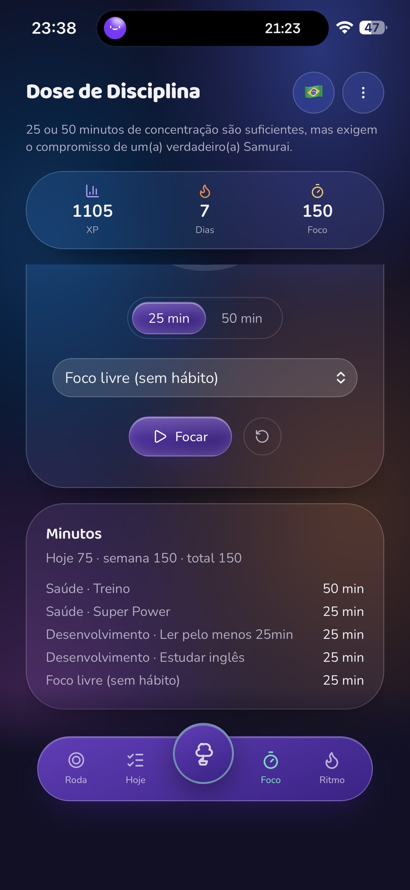
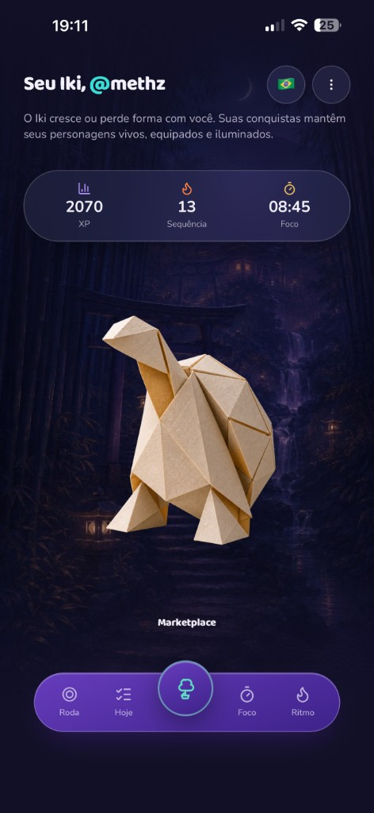
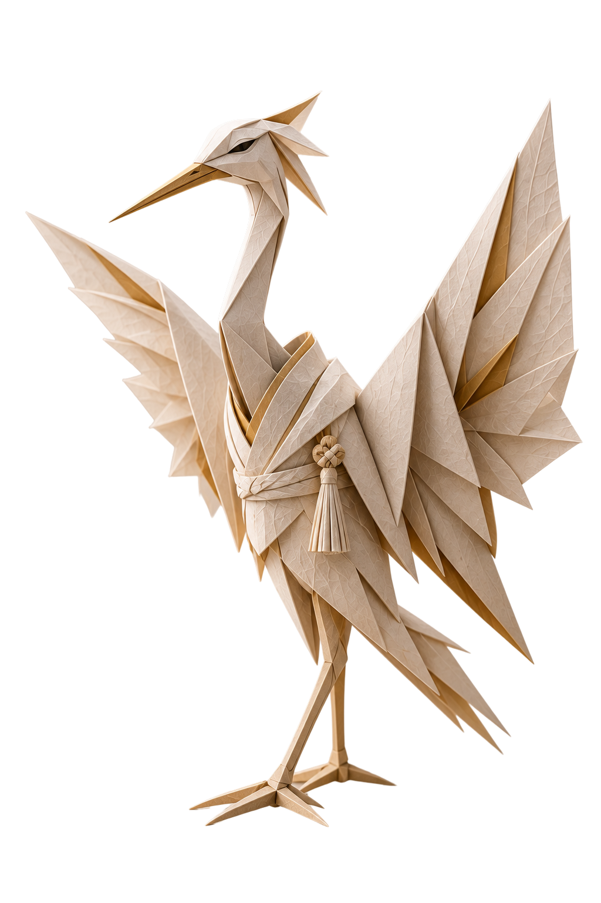
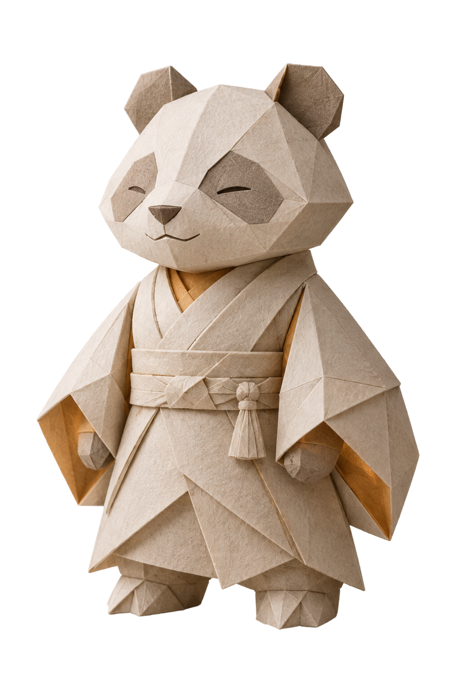
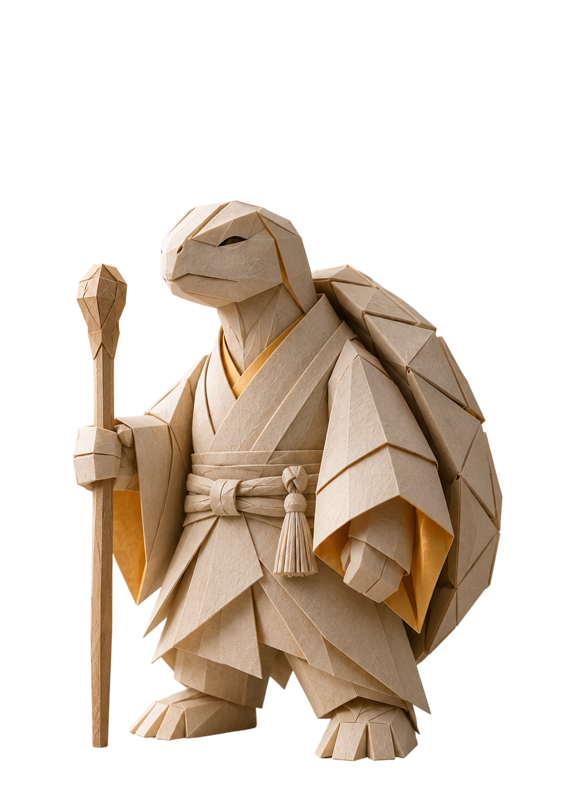

1
Purpose & goals
Organize what actually matters in your life. See your path on your own Wheel of Life and know exactly where to put your energy, adjusting the route whenever the season changes.
100% free app
Enough planning with nothing to show. IkiApp protects your attention so you actually do what matters, while you discover and grow a purpose tamagotchi that reacts to real focus.
Free app · Only 100 exclusive spots
Organize what actually matters in your life. See your path on your own Wheel of Life and know exactly where to put your energy, adjusting the route whenever the season changes.
The end of procrastination. Small habits, done for real. The app helps you get 1% better every day, without fake pressure, focused on what actually builds your future.
A built-in timer to crush the work. Focused sessions that protect your attention and get things done, without drifting off.


A lot of people miss their goals because the routine is an invisible mess. IkiApp shows exactly where you are showing up and which parts of life you are leaving behind. Then comes the consistency that actually changes you.
Habits come from your real goals, not generic lists or spreadsheets you never open.
Training, reading, work, whatever is yours. The app shows and holds your unbroken run of days, turning routine into a game of stacked power.
Stack your wins at your own pace. The point is to move forward with a clear visual record of every bit of daily effort.
Focus uses a smart timer: deep work blocks with pauses in between. That is how a promise becomes execution, session after session.
You enter Focus, work on what matters now, and respect the clock. Less drift, more work finished.
The timer is not generic: it strengthens your daily streak and feeds your habit progress in real time.
Every session you finish grants XP and strengthens your paper guardian. Walking away from the work makes your companion lose energy.
Your companion takes shape and grows when you keep your habits, and disappears when you run from them. It is the exact mirror of your discipline and of the archetype of your life today.






Wheel of Life, habit tracker, focus timer and a character-evolution game. Getting better gets much easier when you have the right tools and a visual mirror of your wins.
A visual board so you can clearly follow your life areas, with balanced goals for finances, health, work and personal growth.
The system that tracks your consecutive winning days, proving that 1% done today beats 100% planned for a day that never comes.
A straight-to-the-point timer for work in focus blocks. You will feel that 25 or 50 focused minutes beat hours of distraction.
A virtual companion that evolves, hatches and earns accessories based on the XP and energy you invest in yourself every day. That is the adventure.
Millions of people and purposes will have a friend beside them on the journey of self-discovery, joy and discipline.
The app is in intensive testing so the server stays stable. In this beta we open access to a very small group, for people who want to stop putting life off. If this is you, send your email and wait.
Leave your email and hold your place in line. As soon as a spot opens, you will get everything you need to enter the app and start your journey.
It is the app that turns your routine into a game of growth. You manage your goals on the Wheel of Life, track daily habits and use a built-in focus timer. At the center of it, an origami character appears, grows when you keep your word and fades when you run from yourself.
It is not just a timer, and not just a to-do list. It is your routine on screen and a companion that will not let you lie to yourself. And it is 100% free.
Focus uses uninterrupted 25 or 50 minute blocks, with planned pauses, to protect your attention and crush procrastination.
It is not a generic timer. Each Focus session feeds the day's experience points and the glow of your Iki.
You do not choose the Iki. It appears on the path. When you hit your goals, the character gains XP, grows, lights up and takes shape. When you abandon what you set for yourself, it loses glow, crumples and can disappear.
The Iki is the mirror of your daily consistency, not a collectible mascot.
Yes. IkiApp is 100% free, with no expensive subscriptions. What exists now is a closed exclusive beta, limited to 100 people, so we can follow the experience closely and keep the server stable.
People who already have access sign in at the official login. If you do not have a spot yet, leave your email on this page. The waitlist is the only way into this limited cycle.